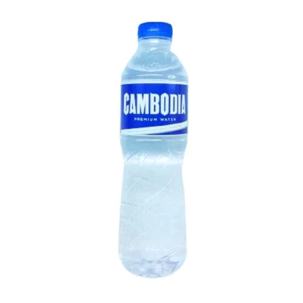
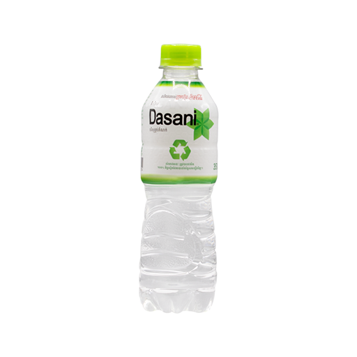
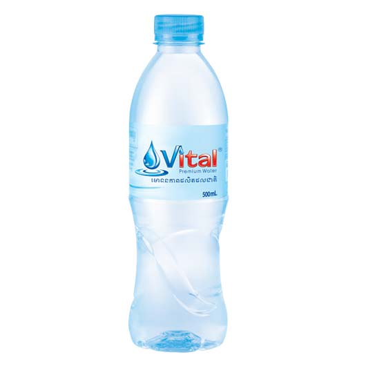

HOME| ABOUT US| OUR SERVICES | CONTACTS

Cambodia water is a natural spring water sourced from the pristine mountains of Cambodia. It is rich in minerals and provides a refreshing taste.

Dasani is a brand of bottled water that is sourced from various locations and is treated to ensure it is safe for consumption.

Vital is a premium bottled water that is sourced from natural springs and is known for its pure taste and high quality.